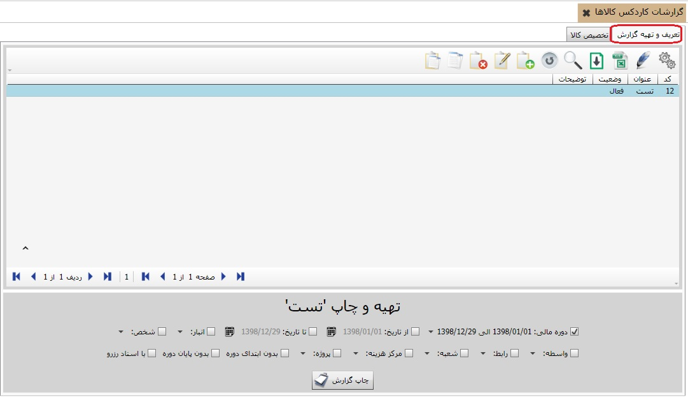
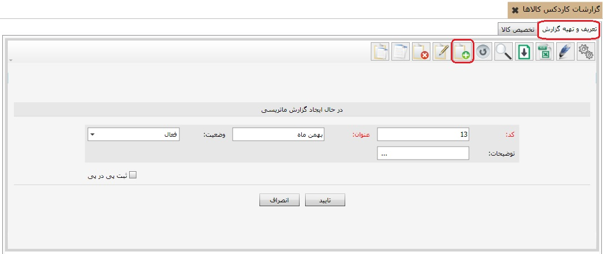
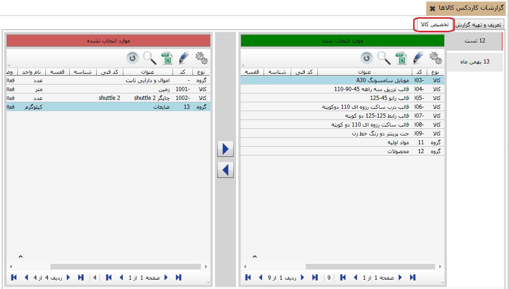

برای تهیه ی گزارشات کاردکس کالا از این منو استفاده کنید، همان طور که می دانید در گزارشات کاردکس کالا می توانید ورود، خروج و مانده ی هر کالا را به تفکیک مشاهده کنید، نحوه ی تهیه ی گزارش را در ادامه شرح می دهیم، به تصویر زیر دقت کنید :
تصویر بالا دارای دو تب می باشد که تب اول آن تعریف و تهیه ی گزارش می باشد وقتی وارد این منو از نرم افزار می شویم سیستم به صورت پیش فرض روی این تب قرار دارد، برای تعریف یک گزارش کافیست از نوار ابزار گزینه ی اضافه را انتخاب کنید، پنجره ی زیر باز می شود:
عنوان فرم بالا را تعیین کنید و سپس گزینه ی تایید را بزنید، حالا به تب دوم می رویم و کالاهای مورد نظر را به گزارشی که تهیه کردیم تخصیص می دهیم، به تصویر زیر دقت کنید :
در این تب کالاهای مورد نظر را به گزارشی که تعریف کرده بودیم تخصیص می دهیم، برای این کار ابتدا باید از لیست سمت راست صفحه گزارش مد نظر را انتخاب کنیم سپس از لیست سمت چپ صفحه کالاهای مورد نظر را با استفاده از فلش ها به سمت راست صفحه منتقل می کنیم، حالا به تب اول باز می گردیم،در پایین صفحه کلیدی با نام چاپ گزارش وجود دارد، به وسیله ی این کلید گزارش مد نظر خود را مشاهده کنید.